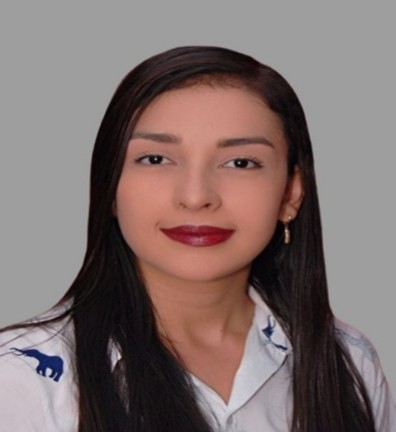

Proyecto de Minería de Datos
Análisis de la relación entre experiencia laboral total, nivel y orden de entidad de servidores públicos y nivel jerárquico utilizando Orange Data Mining
Análisis de la relación entre experiencia laboral total, nivel y orden de entidad de servidores públicos y nivel jerárquico utilizando Orange Data Mining
Explora los diferentes componentes de nuestra investigación y análisis de datos
Conoce al talentoso equipo detrás de este proyecto de investigación

Estudiante de Ingeniería de Sistemas con formación diversa en desarrollo de software, programación y tecnologías actuales.

Estudiante de ingeniería en sistema con conocimientos variados en programación, manejo de bases de datos y redes, con habilidades en desarrollo y diseño de arquitectura software.

Estudiante de ingeniería en sistema con conocimientos variados en programación, manejo de bases de datos y redes, con habilidades en desarrollo y diseño de arquitectura software.
Nuestro guía académico en este proyecto de investigación
Docente de Minería de Datos con más de 10 años de experiencia en análisis de datos.